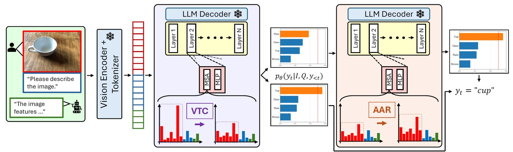
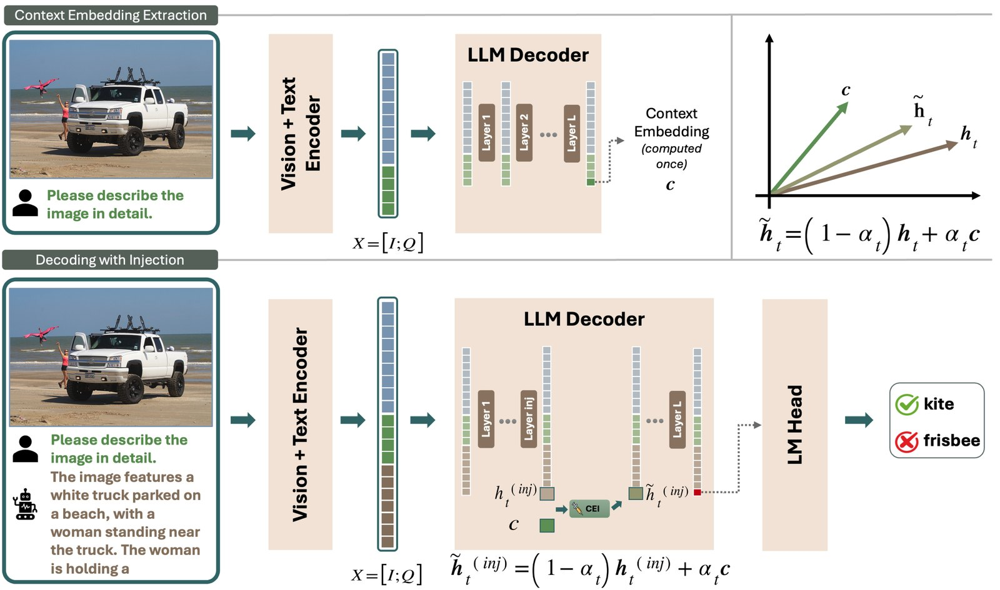
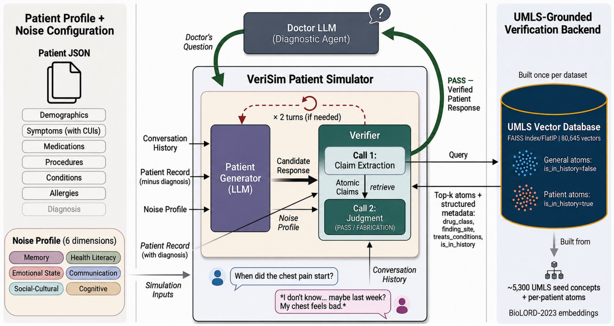
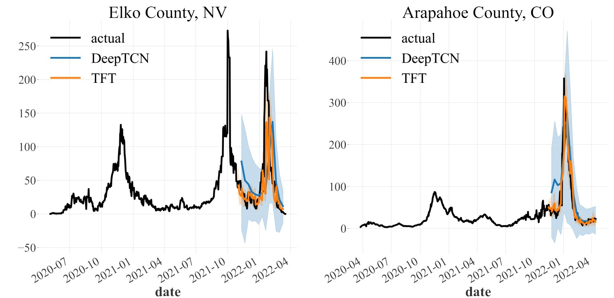

Mehrdad Fazli
Ph.D. Candidate in Computer Science · George Mason University
I make multimodal models see what's actually there: reducing hallucination through decoding, attention, and self-improvement.
I am a Ph.D. candidate at George Mason University, advised by Prof. Ziwei Zhu. My research focuses on multimodal AI, in particular hallucination in large vision-language models (LVLMs): understanding why these models describe things that aren't there, and building methods that make them more faithful to what they see. I have also worked on medical AI, explainable LLMs, and deep learning for health and sensing data.
I have interned as a Ph.D. Software Engineer at Google (Google Cloud), an Applied Scientist at Amazon, and a Data Science & ML Intern at Wayfair. Before GMU, I earned an M.Sc. in Systems Engineering from the University of Virginia.
News
- Sep 2026Preprint Does Playing it Safe Count as Faithfulness? Reassessing LVLM Hallucination Mitigation Methods is now on arXiv.
- Aug 2026Our paper VeriSim: A Configurable Framework for Stress-Testing Medical AI Under Patient Communication Noise was accepted to EMNLP 2026 Findings!
- Aug 2026Wrapped up my internship at Google as a Ph.D. SWE Intern with the Persistent Disk (PD) team in Google Cloud.
- Apr 2026Our paper Inject to Heal: Alleviating Hallucination in LVLMs via Context Embedding Injection was accepted to ACL 2026 Findings!
- Mar 2026Wrapped up my internship with Amazon as an Applied Scientist Intern.
- Mar 2026Attended WACV 2026 in Tucson, AZ and presented our paper CAAC.
- Mar 2026Accepted a Ph.D. SWE internship offer from Google!
- Jan 2026Submitted two papers to ACL 2026. The preprint of Context-Aware Decoding for Faithful Vision-Language Generation is now on arXiv.
- Nov 2025Mitigating Hallucination in Large Vision-Language Models via Adaptive Attention Calibration (CAAC) was accepted at WACV 2026.
- Nov 2025Learning to Explain: Prototype-Based Surrogate Models for LLM Classification was accepted at AAAI 2026 (Oral).
- Sep 2025Accepted an offer to join Amazon as an Applied Scientist Intern (Dec 2025 – Feb 2026).
- May 2025Preprint Mitigating Hallucination in LVLMs via Adaptive Attention Calibration is now on arXiv.
- May 2025Preprint Learning to Explain: Prototype-Based Surrogate Models for LLM Classification is now on arXiv.
- Nov 2023Leveraging Deep Learning to Improve COVID-19 Forecasting Using Wastewater Viral Load was accepted at IEEE BigData 2023.
- Jun 2023Exercise and Sedentary Activity Recognition Using Late Fusion was presented at the 26th International Conference on Information FUSION.
- Apr 2023Competitive Pricing Under Local Network Effects was accepted by the European Journal of Operational Research.
- Mar 2023Admitted to the Ph.D. program in Computer Science at George Mason University.
- Dec 2022Preprint Leveraging Wastewater Monitoring for COVID-19 Forecasting in the US: a Deep Learning Study is now on arXiv.
- Jun 2022Joined Wayfair as a Data Science and Machine Learning Intern for the summer.
- Feb 2022Wastewater-Based Epidemiological Modeling for Continuous Surveillance of COVID-19 Outbreak was published at IEEE BigData 2021.
Experience
Ph.D. Software Engineering Intern · Google
- Designed and implemented a multi-agent AI framework to automate slow-IO debugging and root-cause analysis for GCP's backend storage, saving hundreds of engineering hours per year.
- Triaged 20 production incidents over 3 weeks with the framework.

Applied Scientist Intern · Amazon
- Fine-tuned LLaMA 3.2 3B and Qwen3 4B (LoRA) with Claude Sonnet 4.5 as a teacher to improve the faithfulness and personalization of explanations for recommended items.
- The teacher–student distillation framework let student models match teacher performance at 3× lower latency.
Data Science & Machine Learning Intern · Wayfair
- Added confidence intervals to the "demand simulator" estimates of short-term revenue and profit to quantify uncertainty.
- Built an evaluation framework using 50M+ transactions to retrospectively assess the simulator's accuracy (SQL, Python).
- Created an error-decomposition framework to quantify the contribution of different error sources.
Researcher · University of Virginia
- Built deep probabilistic forecasting models (DeepAR, DeepTCN, TFT) showing that wastewater viral load improves COVID-19 forecasting.
- Fit partially observed Markov process models to agent-based simulations calibrated to real COVID-19 prevalence data.
- Modeled product diffusion over networks to find optimal prices under local network effects.
- Teaching assistant for data & information engineering, differential equations, probability, and statistics.
Research
Multimodal AI & Vision-Language Models
Self-Improving Multimodal Models for Improved Visual Understanding

Vision-language models often lean on language priors instead of looking closely at the image. I am building frameworks in which a model improves its own visual understanding by generating, checking, and learning from its own visually grounded feedback, without relying on large amounts of new human annotation.
CAAC: Confidence-Aware Attention Calibration

A training-free method that corrects spatial perception bias and modality bias in LVLMs through visual-token calibration and confidence-guided attention re-scaling, reducing hallucination on CHAIR, AMBER, and POPE.
Inject to Heal: Context Embedding Injection

Truthful tokens build up probability earlier across decoder layers than hallucinated ones. CEI uses the hidden state of the last input token to keep generation grounded in the image, with static and confidence-adaptive variants.

Medical & Health AI
VeriSim: Stress-Testing Medical AI

A patient simulator that injects controllable, clinically grounded communication noise while verifying facts against UMLS, showing diagnostic models lose 15–25% accuracy under realistic patient behavior.
COVID-19 Forecasting with Deep Learning

Temporal convolutional networks and Temporal Fusion Transformers using wastewater viral load and socio-economic data to improve COVID-19 forecasts.

Explainable AI
Human Activity Recognition & Sensing
HHAR-Net: Hierarchical Activity Recognition

A two-level hierarchical neural classifier for smartphone and smartwatch sensor data that outperforms flat architectures.

Publications
-
EMNLP 2026
FindingsVeriSim: A Configurable Framework for Stress-Testing Medical AI Under Patient Communication NoiseMedical large language models are typically evaluated on idealized patient cases that do not reflect how real patients communicate. We introduce VeriSim, a patient simulation framework that injects controllable noise along six clinically grounded communication dimensions while substantially preserving each patient's medical record. Truth adherence is supported by a verifier that extracts atomic claims from each candidate utterance and judges them against a UMLS-grounded vector index built with BioLORD embeddings, using the retrieved atoms' structured clinical metadata (e.g., drug class, anatomical site, treats-condition relations) rather than surface-text similarity alone. Across seven open-weight LLMs, realistic noise reduces diagnostic accuracy by 15-25 percentage points and increases conversation length by 34-55%; the 7-8B models degrade 1.4x more than 70B+ models. A board-certified physician and a licensed nurse rate VeriSim's conversations highly on truth, realism, clinical utility, and noise fidelity (inter-annotator agreement ≥ 0.80 across all dimensions), and an LLM-as-judge closely tracks their ratings, enabling scalable evaluation. -
ACL 2026
FindingsInject to Heal: Alleviating Hallucination in LVLMs via Context Embedding InjectionHallucinations—generating responses inconsistent with the visual input—remain a critical limitation of large vision-language models (LVLMs), especially in open-ended tasks such as image captioning and visual reasoning. In this work, we probe the layer-wise generation dynamics that drive hallucinations and propose a training-free mitigation strategy. Employing the Logit Lens, we examine how LVLMs construct next-token distributions across decoder layers, uncovering a pronounced commitment-depth gap: truthful tokens accumulate probability mass on their final candidates earlier than hallucinatory ones. Drawing on this discovery, we introduce Context Embedding injection (CEI), a lightweight method that harnesses the hidden state of the last input token—the context embedding—as a grounding signal to maintain visual fidelity throughout decoding and curb hallucinations. Evaluated on the CHAIR, AMBER, and MMHal-Bench benchmarks (with a maximum token length of 512), CEI outperforms state-of-the-art baselines across three LVLMs, with its dynamic variant yielding the lowest overall hallucination rates. By integrating novel mechanistic insights with a scalable intervention, this work advances the mitigation of hallucinations in LVLMs. -
AAAI 2026
OralMaking Sense of LLM Decisions: A Prototype-based Framework for Explainable ClassificationLarge language models (LLMs) have demonstrated impressive performance on natural language tasks, but their decision-making processes remain largely opaque. Existing explanation methods either suffer from limited faithfulness to the model's reasoning or produce explanations that are difficult for humans to understand. To address these challenges, we propose ProtoSurE, a novel prototype-based surrogate framework that provides faithful and understandable explanations for LLMs. ProtoSurE trains an interpretable-by-design surrogate model that aligns with the target LLM while utilizing sentence-level prototypes as understandable concepts. Extensive experiments show that ProtoSurE consistently outperforms state-of-the-art explanation methods across diverse LLMs and datasets. Importantly, ProtoSurE demonstrates strong data efficiency, requiring relatively few training examples to achieve good performance, making it practical for real-world applications. -
WACV 2026
CAAC: Confidence-Aware Attention Calibration to Reduce Hallucinations in Large Vision-Language ModelsLarge vision-language models (LVLMs) achieve impressive performance on multimodal tasks but often suffer from hallucination, and confidently describe objects or attributes not present in the image. Current training-free interventions struggle to maintain accuracy in open-ended and long-form generation scenarios. We introduce the Confidence-Aware Attention Calibration (CAAC) framework to address this challenge by targeting two key biases: spatial perception bias, which distributes attention disproportionately across image tokens, and modality bias, which shifts focus from visual to textual inputs over time. CAAC employs a two-step approach: Visual-Token Calibration (VTC) to balance attention across visual tokens, and Adaptive Attention Re-Scaling (AAR) to reinforce visual grounding guided by the model's confidence. This confidence-driven adjustment ensures consistent visual alignment during generation. Experiments on CHAIR, AMBER, and POPE benchmarks demonstrate that CAAC outperforms baselines, particularly in long-form generations, effectively reducing hallucination.
-
Under review
Does Playing it Safe Count as Faithfulness? Reassessing LVLM Hallucination Mitigation MethodsRecent inference-time hallucination mitigation methods for large vision-language models (LVLMs) report strong gains on hallucination benchmarks. However, it remains unclear whether lower hallucination scores reflect improved multimodal grounding or more conservative generation. We evaluate six mitigation methods across three LVLMs and four benchmarks, including hallucination-focused evaluation and the diverse capability benchmark MMStar. Our analysis reveals two consistent patterns. First, hallucination reduction is often coupled with reduced informativeness: methods that lower hallucination rates also reduce object recall, visual coverage, or response detailedness. Second, improvements on hallucination benchmarks do not reliably transfer to broader multimodal capabilities, with methods showing inconsistent or degraded performance on fine-grained perception and reasoning tasks. Our findings suggest that current evaluation protocols may overestimate progress by rewarding conservative generation. We argue that hallucination mitigation should be evaluated as a faithfulness–informativeness–capability trade-off rather than through hallucination scores alone.
-
IEEE BigData 2023
Leveraging Deep Learning to Improve COVID-19 Forecasting Using Wastewater Viral LoadThe outburst of COVID-19 in late 2019 was the start of a health crisis that shook the world and took millions of lives in the ensuing years. Many governments and health officials failed to arrest the rapid circulation of infection in their communities. The long incubation period and the large proportion of asymptomatic cases made COVID-19 particularly elusive to track. However, wastewater surveillance soon became a promising data source in addition to conventional indicators such as confirmed daily cases, hospitalizations, and deaths. Despite the consensus on the effectiveness of wastewater viral load, there is a lack of methodological approaches that leverage viral load to improve COVID-19 forecasting. This paper proposes a deep learning framework to automatically discover the relationship between daily cases and viral load data. We trained a Deep Temporal Convolutional Network (DeepTCN) and a Temporal Fusion Transformer (TFT) model to obtain a global forecasting model. We supplement the daily confirmed cases with viral loads and other socio-economic factors as covariates to the models. Our results suggest that TFT outperforms DeepTCN and learns a better association between viral load and daily cases. We demonstrate that equipping the models with the viral load improves forecasting accuracy and reduces uncertainty. Moreover, viral load is shown to be the second most predictive input, following the containment and health index. Our results reveal the feasibility of training a location-agnostic deep-learning model to capture the dynamics of infection diffusion when wastewater viral load data is available.
-
FUSION 2023
Exercise and Sedentary Activity Recognition Using Late Fusion: Building Adaptable Uncertain ModelsWearable smart devices are capable of capturing a variety of information from their users using a multitude of noninvasive sensing modalities. Using features from the raw measurements of wearable devices, sensor fusion enables us to obtain a holistic picture of the users’ context and monitor their activity state with increased accuracy. Human activity recognition using noninvasive sensors allows us to capture the natural behavior of users in their day-to-day lives. This in-the-wild activity recognition, however, poses several key challenges that must be addressed to create effective classification models. The main challenges are class imbalance, uncertainty in classifier decisions, and large feature spaces. To address them, this study further explores a probabilistic sensor fusion method called Naive Adaptive Probabilistic Sensor (NAPS) Fusion. In doing so, we establish the viability of NAPS Fusion for natural human activity recognition using noninvasive sensing modalities. NAPS Fusion handles dimensionality reduction by creating reduced feature sets and mitigates the class imbalance issue through the use of Synthetic Minority Oversampling Technique (SMOTE). Moreover, NAPS Fusion addresses uncertainty in the decisions of classifiers using a Dempster-Shafer theoretic late fusion framework. Our empirical evaluation demonstrates that NAPS Fusion has broad applications beyond its original design for cognitive state detection. It outperforms similar decision level sensor fusion methods (late fusion using averaging, LFA, and late fusion using learned weights, LFL) in the detection of exercise and sedentary activities such as walking, running, lying down, and sitting. We observe improvements of up to 56% in F1 score and up to 59% in precision with NAPS Fusion over the compared methods.
-
EJOR 2023
Competitive Pricing Under Local Network EffectsThis paper will study the pricing problem of two competitive products in a market characterized by local externalities. For this purpose, a stochastic model of sales propagation among consumers is developed. This model utilizes a compartmentalized schema denoted as a Markov Chain where the local network effects impact transition rates. A key aspect of the proposed model is its multilayer structure, where products’ information streams through different layers. The equilibrium conditions and the optimal pricing strategies in a competitive market are examined. The pricing problem is investigated in two settings of homogeneous and heterogeneous (i.e., differential). It is shown that the existence and coexistence of individual products in the equilibrium point depends on an epidemic parameter, called reproduction number, that quantifies the speed by which a product’s sales spread over the network. Moreover, it is found that the correlation between the network’s layers impacts the equilibrium point. Specifically, a negative correlation between the network’s layers allows a wider coexistence region than a positive correlation. Additionally, it is found that a negative correlation between the network’s layers provides more flexibility to firms for their pricing practices and yields a higher profit. Finally, different pricing strategies are characterized with respect to model parameters and the centrality measures of different networks. It is observed that while centrality measures and optimal prices are highly correlated, node centralities alone are not enough to determine optimal prices.
-
IEEE BigData 2021
Wastewater-Based Epidemiological Modeling for Continuous Surveillance of COVID-19 OutbreakUsing wastewater surveillance as a continuous pooled sampling technique has been in place in many countries since the early stages of the outbreak of COVID-19. Since the beginning of the outbreak, many research works have emerged, studying different aspects of viral SARS-CoV-2 DNA concentrations (viral load) in wastewater and its potential as an early warning method. However, one of the questions that has remained unanswered is the quantitative relation between viral load and clinical indicators such as daily cases, deaths, and hospitalizations. Few studies have tried to couple viral load data with an epidemiological model to relate the number of infections in the community to the viral burden. This paper proposes a stochastic wastewater-based SEIR model to showcase the importance of viral load in the early detection and prediction of an outbreak in a community. We built three models based on whether or not they use the case count and viral load data and compared their simulations and forecasting quality. Our results demonstrate that a simple SEIR model based on viral load data can reliably predict the number of infections in the future. Therefore, wastewater-based surveillance is a promising way of monitoring the spread of COVID19 and can provide city officials with timely information about the circulation of COVID-19 in the community.
-
IHCI 2020
HHAR-net: Hierarchical Human Activity Recognition using Neural Networks Best Paper AwardActivity recognition using built-in sensors in smart and wearable devices provides great opportunities to understand and detect human behavior in the wild and gives a more holistic view of individuals’ health and well being. Numerous computational methods have been applied to sensor streams to recognize different daily activities. However, most methods are unable to capture different layers of activities concealed in human behavior. Also, the performance of the models starts to decrease with increasing the number of activities. This research aims at building a hierarchical classification with Neural Networks to recognize human activities based on different levels of abstraction. We evaluate our model on the Extrasensory dataset; a dataset collected in the wild and containing data from smartphones and smartwatches. We use a two-level hierarchy with a total of six mutually exclusive labels namely, “lying down”, “sitting”, “standing in place”, “walking”, “running”, and “bicycling” divided into “stationary” and “non-stationary”. The results show that our model can recognize low-level activities (stationary/non-stationary) with 95.8% accuracy and overall accuracy of 92.8% over six labels. This is 3% above our best performing baseline.
Education
- Ph.D. in Computer Science, George Mason University, Fairfax, VA · expected Aug 2027
- M.Sc. in Systems Engineering, University of Virginia, Charlottesville, VA · May 2023
Awards & Honors
- Outstanding Graduate Teaching Assistant Award, Department of Computer Science, GMU (2024)
- Best Paper Award, 12th International Conference on Intelligent Human-Computer Interaction (IHCI) (2021)
Service
- Reviewer: EMNLP 2026, NeurIPS 2026
- Teaching Assistant, George Mason University and University of Virginia
Skills
- Research areas
- Multimodal LLMs / vision-language models, hallucination mitigation, evaluation & benchmarking, explainable AI
- Post-training
- Supervised fine-tuning (SFT), LoRA / PEFT, knowledge distillation, reinforcement learning
- Agentic AI
- Multi-agent systems, tool use, LLM-driven debugging & root-cause analysis
- Frameworks
- PyTorch, Hugging Face Transformers, scikit-learn
- Languages & cloud
- Python, SQL, C++, Bash · GCP (Vertex AI, BigQuery), AWS (SageMaker), PySpark, Git